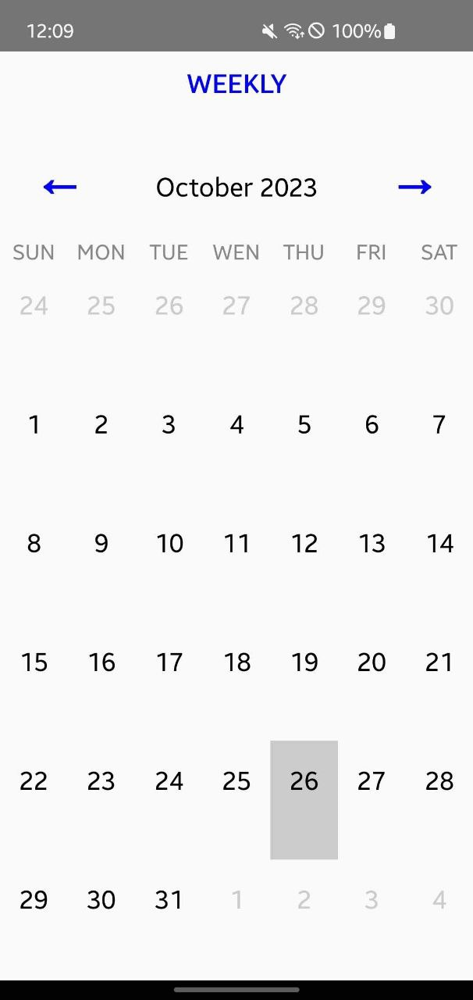
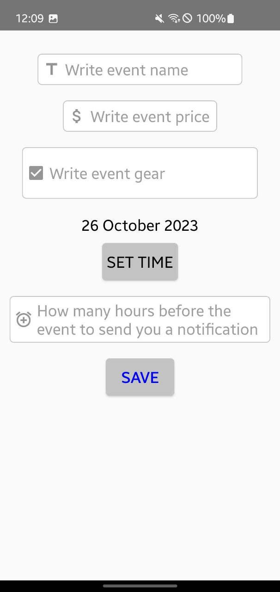

My Time
Android-приложение | Выпускной проект Samsung IT School (2022)
Описание Проекта
Добро пожаловать в My Time, вашего персонального ассистента по управлению временем. Это Android-приложение, разработанное в качестве выпускного проекта в IT Школе Самсунг (2022), призвано помочь вам взять свое время под контроль, особенно если вы фрилансер или индивидуальный предприниматель.
Проект фокусировался на создании удобного инструмента для организации рабочего процесса и повышения продуктивности.
Реализованные Функции
- Управление задачами: Легкое создание, организация и управление задачами и списками дел. Помогает оставаться в курсе рабочей нагрузки и не пропускать дедлайны.
- Учет времени: Отслеживание времени, затраченного на различные задачи и проекты для анализа продуктивности.
- Управление событиями/записями: Судя по скриншоту, реализована возможность добавления событий с указанием названия, цены (?), оборудования (?), даты/времени и настроек уведомлений.
Технологии
Приложение разработано с использованием следующих технологий:
- Платформа и Язык:
- Android SDK
- Java
- UI и Компоненты:
- AndroidX Libraries (AppCompat, ConstraintLayout, CardView, RecyclerView)
- Material Components for Android
- Сборка и Тестирование:
- Gradle
- JUnit
Ссылки
- Репозиторий на GitHub
- Google Play Store: (Не опубликовано. Планируется масштабный реворк перед релизом)
Скриншоты

